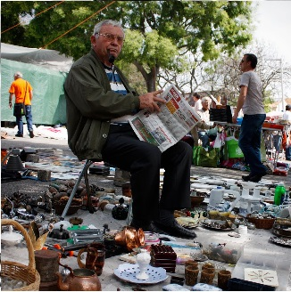

Bem-Vindo,
Este é o Mooshak da Feira, uma alternativa ao Mooshak Original. Este Mooshak serve apenas para testarem o vosso projecto.
Este é o Mooshak da Feira, uma alternativa ao Mooshak Original. Este Mooshak serve apenas para testarem o vosso projecto.
Caso recebas alguma mensagem de erro, clica em "Limpar Ficheiros", para limpares o repositório.
Se possível antes de submeteres limpa o repositório.